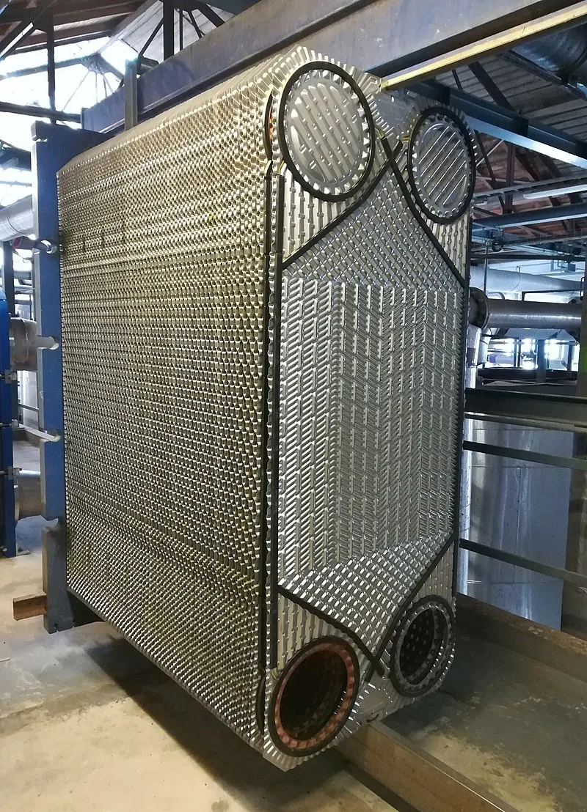
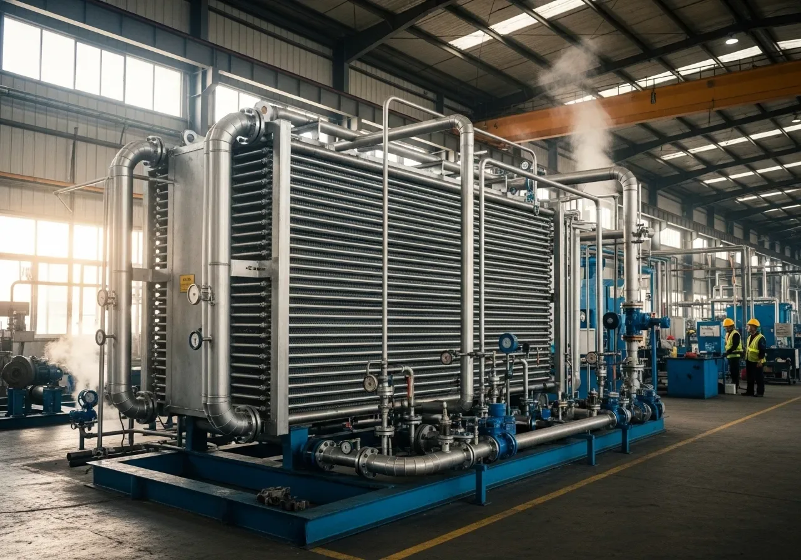
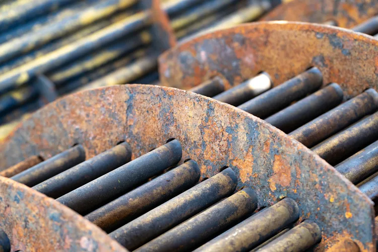
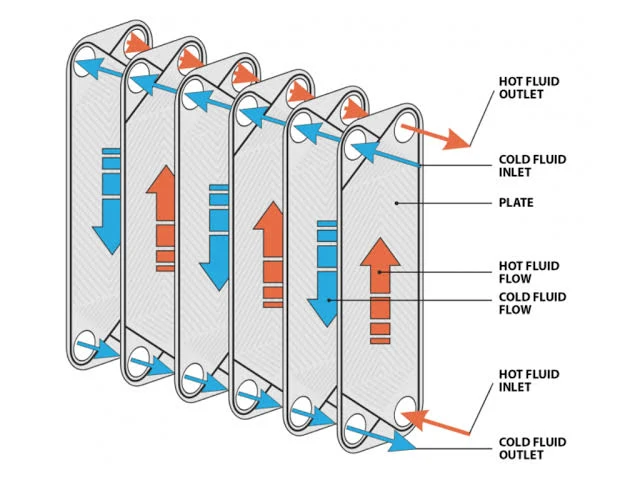
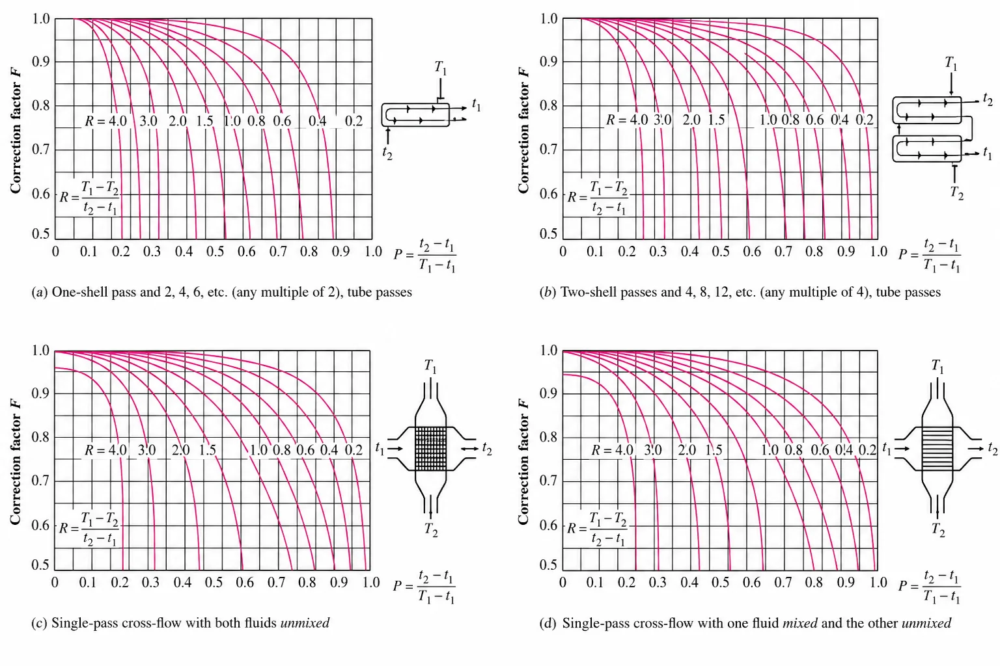
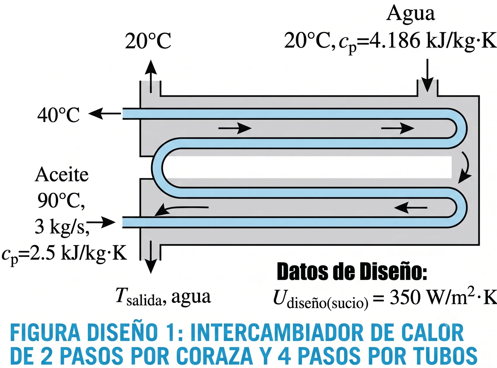

IQYA-2031 · Sesión 11
Fundamentos, mecanismos de transferencia y diseño por LMTD
Esta sesión conecta con el reactor de extracción de la planta de pectina: el intercambiador que enfría el extracto ácido antes de la precipitación con etanol se diseña con estos mismos principios.

Son esenciales para:
Un diseño óptimo impacta directamente la rentabilidad y la huella ambiental de las plantas, optimizando la recuperación energética y minimizando los costos operativos.
Transferencia de calor a través del medio material estacionario (pared del tubo o placa) que separa los fluidos.
Ley de Fourier: el flujo de calor ($q_k$) es proporcional al gradiente de temperatura y al área.
Donde $k$ es la conductividad térmica del material.
Transferencia de calor entre una superficie sólida y un fluido en movimiento.
Ley de enfriamiento de Newton:
Donde $h$ es el coeficiente de transferencia por convección, dependiente de la geometría, las propiedades del fluido y el régimen de flujo.
En la práctica, agrupamos todas las resistencias térmicas en un único parámetro denominado Coeficiente Global de Transferencia de Calor (U).
Donde $U$ es el coeficiente global, $A$ el área de transferencia y $\Delta T_{global}$ la diferencia de temperatura efectiva.
$U$ representa la facilidad con la que el calor se transfiere a través de toda la barrera compuesta por unidad de área y diferencia de temperatura.
Normalmente, $U$ se basa en el área externa ($U_o$) o interna ($U_i$).
Con el tiempo, todo intercambiador acumula depósitos que degradan su rendimiento. Entender por qué ocurre es el primer paso para diseñar y operar correctamente.

El ensuciamiento (fouling) es la acumulación de depósitos indeseados (sarro, óxido, biopelículas, coque) en las superficies de transferencia.
Estos depósitos generan una resistencia térmica adicional que disminuye el rendimiento del intercambiador.
Para el diseño, se incorporan factores de ensuciamiento ($R_f$) en la ecuación:
Donde $R_{f,i}$ y $R_{f,o}$ representan las resistencias por ensuciamiento interna y externa.
Valores de referencia usados en la industria para estimar $R_f$ según el tipo de fluido de servicio.
| Fluido | Factor de ensuciamiento $R_f$ (m²·K/W) |
|---|---|
| Agua de torre de enfriamiento | 0.0002 - 0.0004 |
| Agua de río | 0.0002 - 0.0006 |
| Vapor de agua (libre de aceite) | 0.0001 |
| Hidrocarburos líquidos | 0.0002 - 0.0009 |
| Gases de combustión | 0.0009 - 0.0018 |
Los gases de combustión ensucian mucho más que el vapor de agua: partículas de hollín y ceniza se adhieren a superficies calientes con facilidad, mientras que el vapor limpio prácticamente no deja residuo.
El ensuciamiento no es un fenómeno único; existen diversas formas en que los depósitos se acumulan, cada una con sus propias características y desafíos.
Cada geometría resuelve un problema distinto: presión, viscosidad, espacio disponible o facilidad de limpieza determinan cuál es la mejor opción.
Este es el tipo de intercambiador más utilizado en la industria. Su diseño está estandarizado por la TEMA (Tubular Exchanger Manufacturers Association).
Consisten en un paquete de placas de metal delgadas y corrugadas, montadas en un bastidor y selladas por empaques (juntas). Los fluidos caliente y frío fluyen en canales alternos formados entre las placas.

¿Cómo se dimensiona un intercambiador? El método LMTD es la herramienta clásica para problemas de diseño.
En el ejemplo de esta sesión, la diferencia entre ambos enfoques es pequeña (22,6°C vs. 22,5°C), pero en intercambiadores con temperaturas muy dispares en los extremos, usar la media aritmética puede sobrestimar el área disponible de forma significativa.
El método LMTD (Log Mean Temperature Difference) proporciona la media teórica correcta de la diferencia de temperatura para el cálculo de la transferencia de calor total.
La ecuación fundamental se reescribe como:
Donde $\Delta T_{ML}$ (o LMTD) es la media logarítmica de la diferencia de temperatura, que depende de la configuración del flujo.
Ese cambio continuo del $\Delta T$ a lo largo del intercambiador es justamente lo que justifica usar una media logarítmica en vez de una aritmética.
Esta es la media logarítmica que aparece en $q = UA\Delta T_{ML}$: el resultado formal de integrar el balance diferencial a lo largo de todo el intercambiador.
La LMTD se calcula según cómo fluyen los fluidos entre sí. La fórmula general es $\Delta T_{ML} = \dfrac{\Delta T_1 - \Delta T_2}{\ln(\Delta T_1/\Delta T_2)}$
La fórmula de LMTD es estrictamente válida solo para flujo en paralelo puro o contraflujo puro. Los intercambiadores reales, con múltiples pasos por los tubos o por la coraza, requieren un factor de corrección, $F$:
Para un diseño viable, se recomienda que $F > 0.75$.
Si $F$ es muy bajo, indica una «cruz de temperaturas» ineficiente.
La $\Delta T_{ML}$ en esta ecuación siempre se calcula usando las temperaturas de entrada y salida como si el equipo operara en contraflujo puro.

El factor $F$ se determina a partir de gráficas estandarizadas, específicas para cada configuración geométrica del intercambiador. Usan dos parámetros adimensionales:
Razón de capacidades térmicas (R):
Efectividad térmica (P):
T mayúscula = fluido de la coraza, t minúscula = fluido de los tubos; subíndice 1 = entrada, 2 = salida.
Se conocen las cuatro temperaturas terminales y se busca el área de un intercambiador nuevo, un problema de diseño directo, sin iteración.
Se conocen el área y los caudales, y se necesita predecir las temperaturas de salida de un equipo existente, un problema de simulación que evita la iteración.

Se utiliza un intercambiador de calor de 2 pasos por coraza y 4 pasos por los tubos para enfriar 3 kg/s de aceite ($c_p = 2.5$ kJ/kg·K) desde 90°C hasta 40°C.
El enfriamiento se realiza con 2 kg/s de agua ($c_p = 4.186$ kJ/kg·K) que entra al intercambiador a 20°C.
El coeficiente global de transferencia de calor de diseño (sucio) se estima en 350 W/m²·K.
Objetivo: determinar el área de transferencia de calor requerida para este servicio.
La selección óptima resulta de un balance técnico-económico para encontrar la solución más robusta y rentable para cada servicio específico.
El coeficiente global $U$ combina conducción y convección en serie. El ensuciamiento lo degrada con el tiempo mediante 5 mecanismos distintos (cristalización, reacción química, oxidación, biológico, partículas), cada uno con su propia estrategia de mitigación.
Tubos y coraza domina la industria por su robustez; placas ofrece máxima eficiencia en espacio reducido; espiral y aletados resuelven casos especiales (lodos, gases). La selección balancea fluidos, operación, proceso y economía.
Para problemas de diseño (temperaturas terminales conocidas), $A = q/(U \cdot F \cdot \Delta T_{ML})$ resuelve directamente. Para problemas de simulación, el método ε-NTU es más eficiente al evitar la iteración.